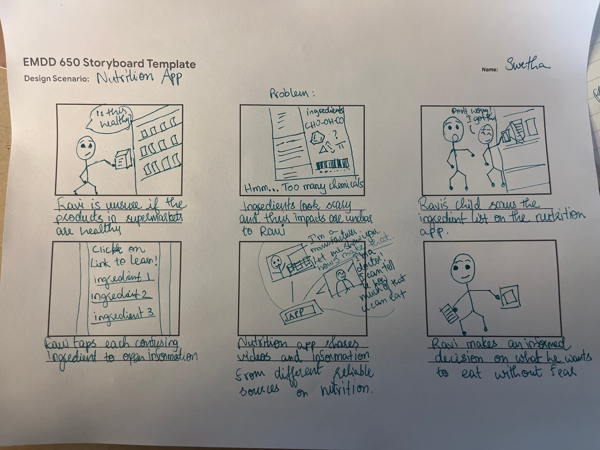
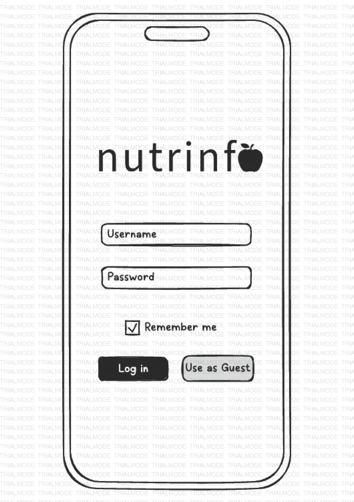
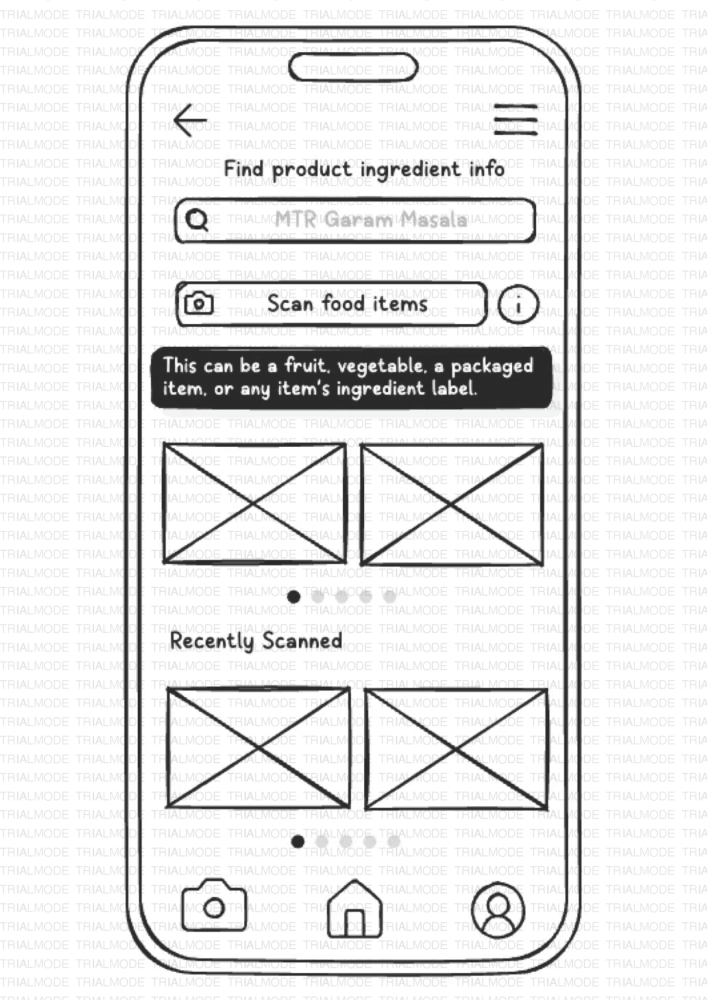
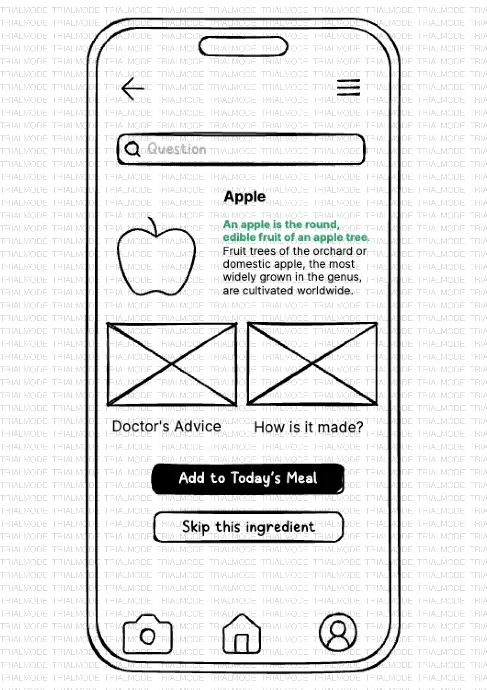
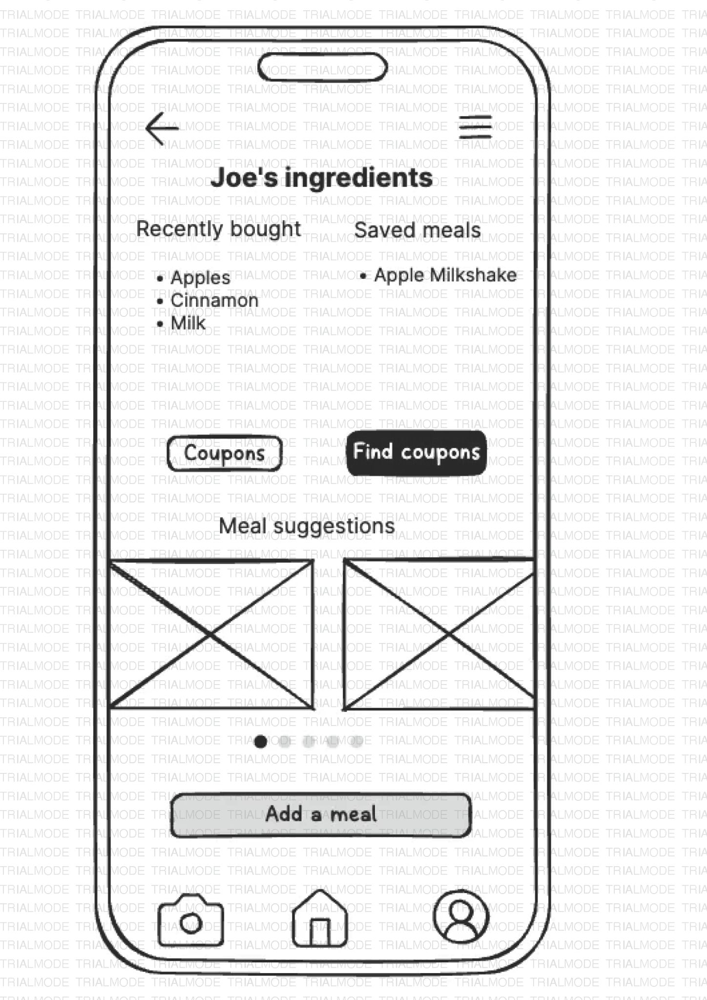
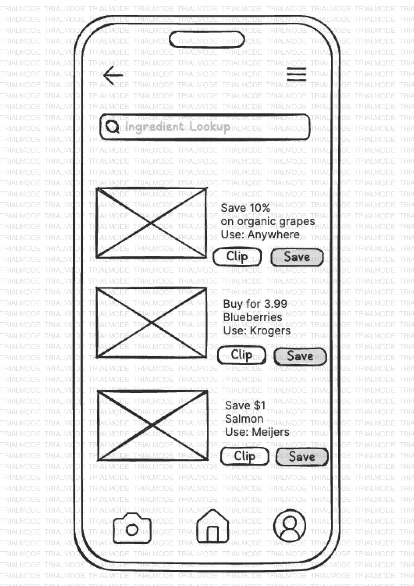
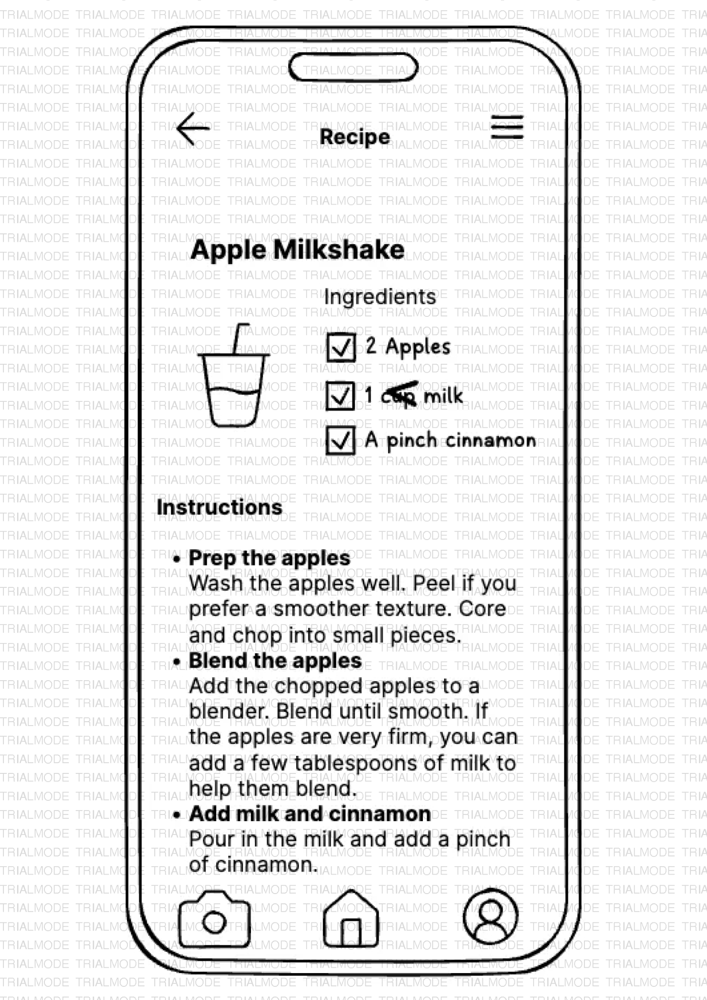

A mobile app helping graduate students make informed, affordable food choices. Grounded in five empathy interviews and built across two prototype rounds.
5Interviews
4Key Findings
2Prototype Rounds
4Usability Testers
▸ Design Process
Step 01
A scanning app for India, or was it?
The project began with a specific observation: many Indian consumers, particularly Gen X, experience genuine anxiety confronted with chemical-sounding ingredient labels. The initial concept was a scanning app to decode those labels, with doctor-led commentary.
Five semi-structured interviews with Midwest graduate students changed everything. The participants: four international students, one domestic, ages 20 to 30. They were not primarily worried about ingredient literacy. They were worried about cost, speed, and cultural fit.
5 participants
Four international, one domestic. Four Master's, one PhD. All enrolled at Midwest universities.
20-30 min sessions
Semi-structured protocol covering personal definitions of "healthy," grocery habits, and financial constraints.
Core question
What actually prevents graduate students from eating the way they want to?
The pivot
From label literacy for Indian consumers to cost-conscious, culturally neutral food support for all grad students.
The problem was not "people don't understand what's in their food." It was: "people can't consistently afford or find food that fits their own definition of healthy."
Step 02
Four findings that rewrote the brief
▸ Problem Statement
Graduate students, particularly international students adjusting to unfamiliar food systems, struggle to make informed, affordable, and culturally appropriate food choices because existing nutritional tools are too slow, too prescriptive, and too costly in their implied dietary standards.
Finding 01
"Healthy" is culturally constructed, not universal
Each participant defined healthy differently. Organic certification, unprocessed ingredients, cultural familiarity: no single definition held.
Feature: Plain-language ingredient descriptions. No good/bad rating system.
Finding 02
Financial cost is the primary barrier
Cost was a more urgent concern than nutritional knowledge across multiple participants.
Feature: Coupons page. Meal suggestions from saved ingredients.
Finding 03
Speed and low friction are non-negotiable
Students use their phones in supermarket aisles, between classes, while cooking. A long onboarding leads to immediate abandonment.
Feature: "Use as Guest" access. Scan from the home screen, no account required.
Finding 04
Users want actionable outputs, not just facts
Knowing what an ingredient is was not enough. Every piece of information needed to connect to a practical next step.
Feature: Save/Skip CTAs on results. Profile-driven meal suggestions. Coupon clipping.
Step 03
Storyboard first, then sketch
A six-panel storyboard traced the primary design scenario: Ravi, a composite persona from the research, standing in a supermarket uncertain about a product's ingredients. The storyboard confirmed the scan-first flow and surfaced an early question about guest users with no saved ingredients.

Storyboard: Ravi at the supermarket
Describe, do not prescribe
Present ingredient facts neutrally. Let users apply their own health frameworks.
Every ingredient explanation, saved item, and coupon leads the user to a practical next step.
Step 04
Paper to pixels
Round one: hand-drawn wireframes testing information architecture and navigation flow. Eight primary screens covering the full core user journey. Round two: a mid-fidelity Figma prototype with a complete visual identity: deep forest green, clean typography, photographic imagery throughout.

Login screen: equal-weight "Use as Guest"

Ingredient Lookup with scan CTA

Ingredient result: Save / Skip CTAs

Profile: saved ingredients and meal suggestions

Coupons with retailer-specific deals

Recipe detail: checkbox ingredient list
▸ Mid-Fidelity PrototypeFigma · interactive
Nutrinfo · Mid-Fidelity Prototype
Opens the Figma embed in this frame.
Step 05
What four testers actually did
Four graduate students (two American, two international, ages 23 to 27) completed two scenario-based tasks using a think-aloud protocol. The core flow held. But four patterns emerged that required structural changes.
High priority
Scan feature overlooked. Users scrolled the homepage looking for more content rather than scanning immediately.
High priority
Coupons not findable in bottom nav. Hidden inside the hamburger menu, both domestic and international participants missed it entirely.
Medium priority
Terminology confusion: "Favorites" vs. "Added" created uncertainty about what was saved and where to find it.
Medium priority
Meal suggestions appeared generic. Users did not know they were generated from their saved ingredients.
The core flow was sound. What testers needed was better signposting: where to start, where to find things, and why a suggestion was surfaced for them specifically.
Add three onboarding splash screens foregrounding the scan feature and communicating the app's three value propositions before the login screen
Move Coupons into the bottom navigation bar as the highest-priority structural change
Standardise terminology to "Saved Ingredients" throughout the app
Add a contextual label to the Meal Suggestions section: "Based on your saved ingredients"
Fix safe-area insets causing design cutoff on mobile screens